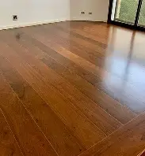

Publicado em:
Quanto Custa Aplicar o Piso de Madeira
O piso de madeira é um dos acabamentos mais procurados em obras e reformas. Ele une beleza estética, conforto térmico, resistência e um charme atemporal que valoriza qualquer ambiente. No entanto, o custo de aplicação pode variar bastante dependendo do tipo de madeira, do acabamento e da complexidade da instalação.
1. Tipos de piso de madeira e seus custos
Cada tipo de piso de madeira possui características próprias, o que influencia diretamente no preço final. Veja os mais utilizados:
- Assoalho maciço: feito de madeira nobre (ipê, cumaru, jatobá). É resistente e durável, podendo durar décadas com manutenção adequada.
üí∞ Pre√ßo m√©dio: R$ 250 a R$ 450 por m¬≤ (material + instala√ß√£o). - Taco de madeira: formado por pe√ßas pequenas, que podem ser organizadas em diferentes desenhos (espinha de peixe, diagonal, escama). Dá um toque sofisticado ao ambiente.
üí∞ Pre√ßo m√©dio: R$ 180 a R$ 350 por m¬≤. - Piso engenheirado (piso pronto): √© composto por camadas de madeira coladas, mais estável e menos sujeito a deforma√ß√µes. Já vem envernizado, agilizando a obra.
üí∞ Pre√ßo m√©dio: R$ 150 a R$ 300 por m¬≤. - Piso laminado: produzido com fibras de madeira e revestido com l√¢minas que imitam madeira natural. √â o mais acess√≠vel e rápido de instalar.
üí∞ Pre√ßo m√©dio: R$ 90 a R$ 180 por m¬≤.
2. Custos adicionais envolvidos
O orçamento não se limita apenas ao preço do material. Outros fatores influenciam no valor final:
- Regularização do contrapiso: entre R$ 20 e R$ 40 por m².
- Cola, argamassa e acessórios: de R$ 15 a R$ 30 por m².
- Rodapés de madeira: de R$ 20 a R$ 80 por metro linear.
- Lixamento e envernizamento (em pisos maciços): de R$ 25 a R$ 50 por m².
3. Exemplo prático de cálculo
Para uma sala de 20 m² com piso de madeira maciça:
- Piso de madeira: 20 m² x R$ 300 = R$ 6.000
- Regularização do contrapiso: 20 m² x R$ 30 = R$ 600
- Rodapés: 20 metros lineares x R$ 40 = R$ 800
- Total aproximado: R$ 7.400
4. Vantagens e desvantagens do piso de madeira
- Vantagens: alta durabilidade, valoriza o imóvel, conforto térmico, isolamento acústico, estética natural.
- Desvantagens: custo elevado, necessidade de manutenção periódica, sensibilidade à umidade (em pisos maciços).
5. Manutenção e durabilidade
O piso de madeira pode durar de 20 a 50 anos, dependendo da qualidade do material e da manutenção. Pisos maciços podem ser lixados e envernizados várias vezes, enquanto laminados têm vida útil de 10 a 15 anos. É recomendado:
- Evitar excesso de água na limpeza.
- Usar produtos específicos para madeira.
- Reaplicar verniz a cada 5 a 7 anos em pisos maciços.
- Proteger áreas com grande circulação com tapetes.
6. Dicas para economizar
- Faça orçamentos em diferentes fornecedores.
- Considere pisos engenheirados ou laminados se busca custo-benefício.
- Planeje a obra para evitar desperdícios de material.
- Contrate instaladores experientes para reduzir erros.
- Compre 5% a 10% a mais de material para compensar perdas.
Conclusão
O custo de aplicação do piso de madeira pode variar de R$ 90 a R$ 450 por m², dependendo do tipo escolhido. Embora seja um investimento mais alto comparado a outros revestimentos, o piso de madeira oferece beleza, conforto e valorização ao imóvel, tornando-se uma das opções mais duráveis e elegantes para projetos residenciais e comerciais.
üëâ Veja tamb√©m: Como fazer o or√ßamento para o material da canaliza√ß√£o